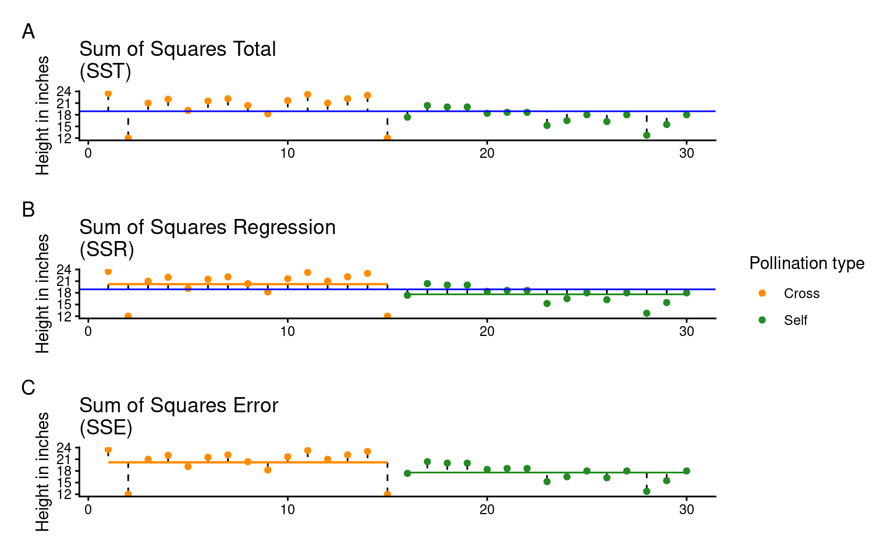
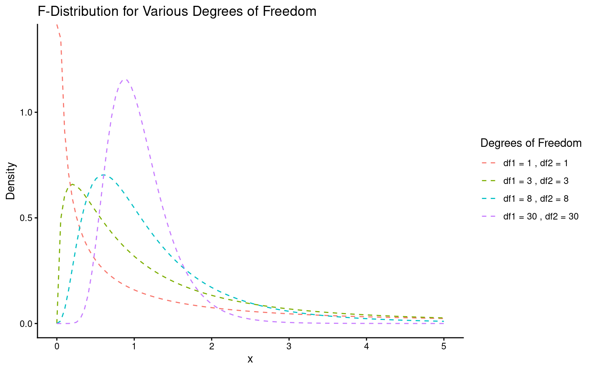
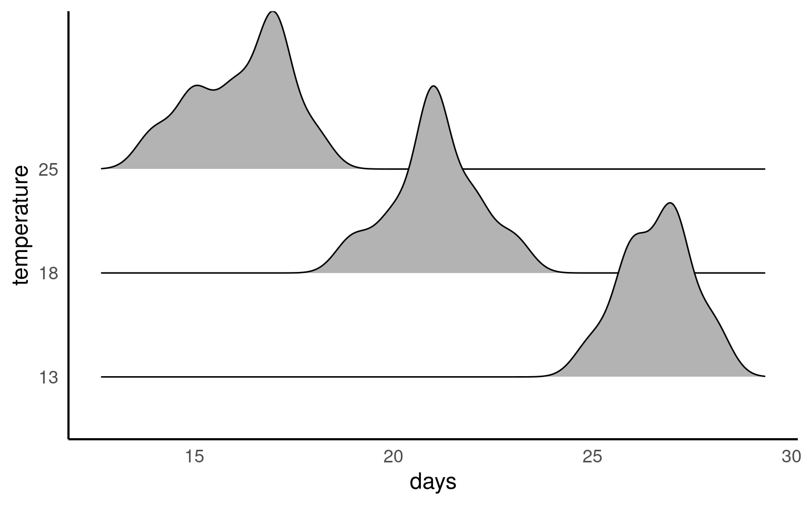
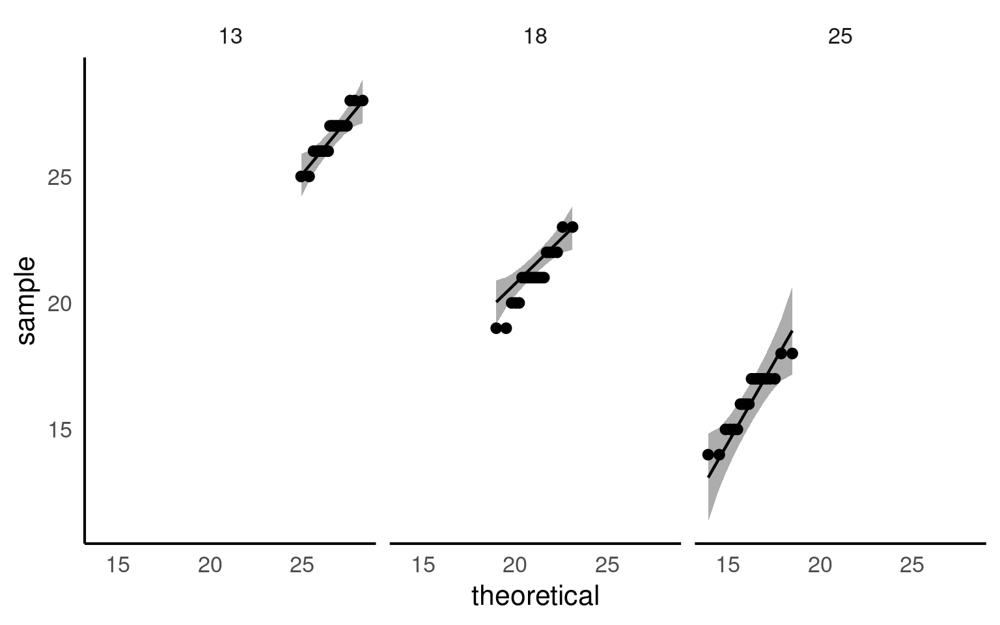
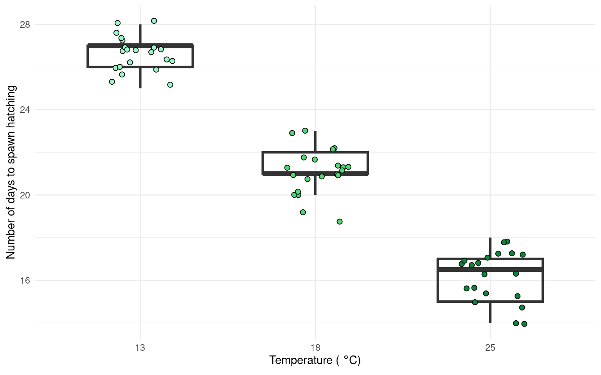
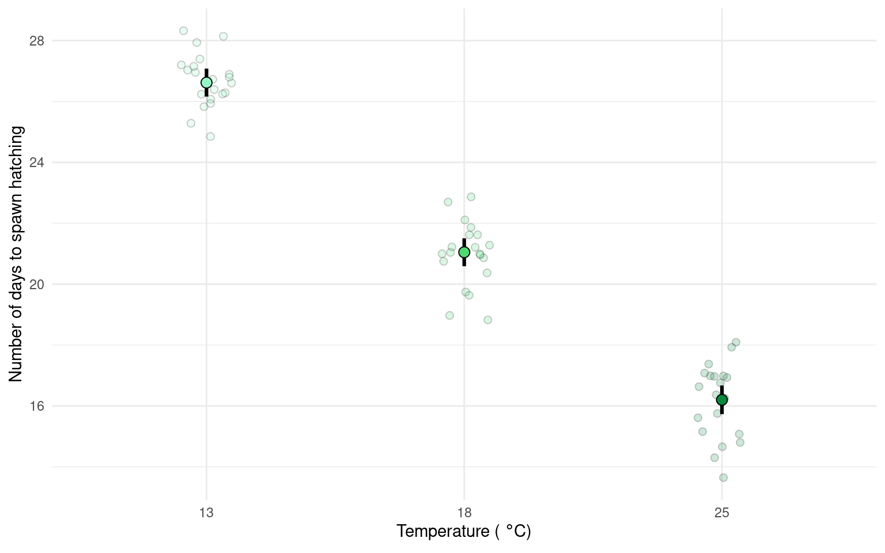

21 ANOVA
Set this up as a new R project, with organised folders.
Make sure to include some data checking in your script.
21.1 Analysis of Variance (ANOVA)
So far we have used linear models for analyses between two ‘categorical’ explanatory variables e.g. t-tests, and for regression with two ‘continuous’ variables. However, as designs become more complicated, the number of comparisons can quickly become overwhelming, working with estimates and intervals alone can become harder.
21.1.2 ANOVA is Useful When We Have More Than Two Groups
When we have more than two groups (i.e., more than two levels of a categorical factor), a t-test would require multiple pairwise comparisons, each introducing an additional chance for Type I errors. If we conducted multiple t-tests (e.g., three comparisons for three groups), the probability of finding at least one significant result by chance (when there is no true effect) increases. ANOVA mitigates this problem by testing an overall hypothesis: it asks if there is a statistically significant difference among the group means without specifying which groups are different. By conducting a single F-test, ANOVA controls the Type I error rate across all group comparisons, maintaining a consistent significance threshold.
21.2 Maize data
Our simple linear model for the maize data was:
lsmodel1 <- lm(height ~ type, data = darwin)A one-way ANOVA is a way of fitting a linear model with a single explanatory variable. Its main goal is to measure the total variability in the data and split it into two parts: the variability between groups (signal) and the variability within groups (noise). This “signal-to-noise” ratio helps us understand how much of the total variation is explained by our model (the signal) versus what remains unexplained (the noise).
The method for fitting this model is called ordinary least squares (OLS). Here’s how it works:
Total Variation (SST): First, the model calculates the total variation (or total sum of squares, SST) by measuring how far each data point is from the overall mean.
Explained Variation (SSR): Then, the model fits a line (slope) that minimizes the squared distances between the data points and this line, capturing the variability explained by the groups (sum of squares for regression, SSR).
Unexplained Variation (SSE): Finally, the leftover variation, or what the model can’t explain, is measured as the sum of squares for error (SSE).
In this way, the total variability (SST) is divided into explained (SSR) and unexplained (SSE) parts, allowing us to see if the differences between group means are likely due to a real effect.
\[ SST = SSR + SSE \]
Remember:
SST = the sum of squared differences between the data points and the grand mean
SSR = the sum of the squared differences between the grand mean and the predicted position on the linear model
SSE = the sum of the squared differences between the predicted position and the observed position

Least squares quantifies A) total least squares, B) treatment least squares, C) error sum of squares (SST, SSR, SSE). The vertical lines measure the distances, which are then squared and summed. SST is calculated by measuring to the intercept, SSR is calculated by measuring the distance of the estimates to the intercept, SSE is calculated by measuring the distance to the estimates
21.2.1 The ANOVA table
If we want to get the ANOVA table for a linear model we can use the anova() function:
| Df | Sum Sq | Mean Sq | F value | Pr(>F) | |
|---|---|---|---|---|---|
| type | 1 | 51.35208 | 51.352083 | 5.939518 | 0.0214145 |
| Residuals | 28 | 242.08333 | 8.645833 | NA | NA |
When you compare this with the output from the summary() function, you’ll see that the F-value, P-value, and degrees of freedom (df) match exactly. However, the ANOVA table itself is fairly minimal—it doesn’t give us biological context, such as differences in means or uncertainties (like standard errors). Despite this, ANOVA tables are commonly reported, though they provide only a basic part of the analysis.
ANOVA tables help simplify effects when there are more than two levels, and understanding their structure is key:
Source (Column 1): Lists the variance source—signal (regression) in the first row and noise (error) in the second.
Degrees of Freedom (Column 2): Shows df for treatments (k - 1) in the first row and residual df (N - k) in the second.
Sum of Squares (Column 3): The total explained variance (SSR) in the first row, and unexplained variance (SSE) in the second.
Mean Sum of Squares (Column 4): The average variance per group, MSR = SSR/(k - 1) for treatments, and MSE = SSE/(N - k) for residuals. This is pooled from all treatments, enhancing power with smaller samples but requiring equal variances across groups (homogeneity).
F-Statistic (Column 5): Our signal-to-noise ratio, calculated as the treatment variance divided by the residual error variance.
\[ F =\frac{SSR/(k-1)}{SSE/(N-k)} = \frac{MSR}{MSE} \]
In our example, with an F value of 5.9, the “signal” (or effect of the treatment) is almost six times greater than the “noise” (within-group variation). To determine if this is significant, we use the F value, along with sample size and treatment levels, to calculate the probability of seeing this ratio if there were actually no treatment effect (null hypothesis).
This probability (the P-value) is found using an F-distribution (see below), which takes into account the degrees of freedom for both the signal (mean squared regression value) and noise (mean squared error value). You can verify this in R with the pf() function, using the F value, degrees of freedom for signal and noise, and setting the last argument to indicate a two-sided test. This should match the P-value in your ANOVA output exactly.

Lastly, it’s helpful to remember that F and t are related: for two groups, the F value is simply the square of the t value.
It’s common to see P-values reported without context, but these “naked P-values” are hard to interpret without knowing:
Which test was used
The observed test value
The degrees of freedom.
So the good (and conventional) way to report this result as an ANOVA would be:
The height of the cross-pollinated plants was significantly taller than the height of the self-pollinated plants (F1,28 = 5.9, P = 0.02).
However, this approach focuses on the statistical test rather than the biological meaning. It doesn’t tell us the actual heights, the estimated difference, or the uncertainty around this estimate.
The self pollinated maize plants measured an average of 17.6 [16-19.1] (mean[95% CI]) inches high, while the cross-pollinated plants had a mean height of 20.2 [18.6-21.7] inches - a difference of 2.6 [-0.4-4.8] inches (one-way ANOVA: F1,28 = 5.9, P = 0.02).
Lastly, it’s helpful to remember that F and t are related: for two groups, the F value is simply the square of the t value.
The F value is the square of the t value when comparing two groups because both tests measure the same thing: the ratio of between-group to within-group variance. In a two-group case, squaring the t statistic (which compares means) matches the variance ratio approach of F, making F = t² and thus equivalent for two groups.
\[ F= \frac{within~group~variance}{between~group~variance} \]
and in a two-sample t-test:
\[ t^2= \frac{difference~in~means^2}{SE^2} \]
21.3 Two-way ANOVA
Two way ANOVA (as you might guess) includes two explanatory variables. Usually these are treatments of interest, but for this example we will stick with including the pair variable.
And we can look at this table using the anova() function again
| Df | Sum Sq | Mean Sq | F value | Pr(>F) | |
|---|---|---|---|---|---|
| type | 1 | 51.35208 | 51.352083 | 4.6138501 | 0.0497029 |
| as.factor(pair) | 14 | 86.26354 | 6.161682 | 0.5536109 | 0.8597119 |
| Residuals | 14 | 155.81979 | 11.129985 | NA | NA |
Note how some of the degrees of freedom which were initially in the residuals, have now been ‘used’ by the new term in the more complex model. And that some of the SSE has now been used by SSR explained by the pair term.
Comparing F-values between different predictors is often a good way of comparing how important they are (what share of variance explained do they have).
When we see an F value less than 1, it suggests that pairing in the experiment isn’t adding useful information—essentially, it’s doing “nothing.” If pairing had no effect, we’d expect an F value around 1, but seeing an F much lower than 1 implies a “negative variance component.” In other words, pairing has actually increased the noise (SSE) relative to the signal (SSR).
When the mean squares for the treatment (MSR) are smaller than for the residuals (MSE), it usually points to a design issue. This could mean there wasn’t enough sampling (more pairs may be needed) or that the pairs weren’t randomly selected.
21.4 Summary
ANOVA tables can be built for any linear model. The tables partition the variance into signal(s) and noise, which can be compared using an F-test. For complex analyses where many pairwise comparisons could be performed, an initial F-test can provide the initial evidence for whether there are any differences at all, reducing the risk of overtesting and the false positives that can be generated.
21.5 ANOVA for frogspawning
Q. How does frogspawn hatching time vary with temperature?
Imagine we ran a manipulative experiment.
A manipulative study is one in which the experimenter changes something about the experimental study system and studies the effect of this change.
We collected newly-layed frogspawn from a pond in the Italian Alps and we brought them back to the lab, where we divided them into 60 water containers. 20 of the containers’ water temperature was kept to 13°C, 20 containers were kept to 18°C and the remaining 20 containers were kept to 25°C. Having a high number of replicates increases our confidence that the expected difference between groups is due to the factor we are interested in. Here, temperature.
We monitored each water container and we recorded hatching times (days until hatching of eggs) in a spreadsheet (here called frogs_messy_data.csv).
Our response variable is Hatching_time.
Our explanatory variable is Temperature, with 3 levels: 13°C, 18°C and 25°C.
We want to compare the means of 3 independent groups (13°C, 18°C and 25°C temperature groups) and we have one continuous response variable (Hatching time in days) and one categorical explanatory variable (Temperature). One-way ANOVA is the appropriate analysis!
21.5.1 Activity 1. Make a Hypothesis
Always make a hypothesis and prediction, before you delve into the data analysis.
A hypothesis is a tentative answer to a well-framed question, referring to a mechanistic explanation of the expected pattern. It can be verified via predictions, which can be tested by making additional observations and performing experiments.
This should be backed up by some level of knowledge about your study system.
In our case, knowing that frogspawn takes around 2-3 weeks to hatch under optimal temperatures (15-20°C), we can hypothesize that the lower the temperature, the longer it will take for frogspawn to hatch. Our hypothesis can therefore be:
Mean frogspawn hatching time will vary with temperature level. Higher temperatures will lead to shorter hatching times. Specifically, at the highest temperature in our study (25°C), we predict that hatching time will be reduced compared to lower temperatures
21.5.2 Activity 2. Import and clean data
After setting up your R project, import and tidy your dataset.
Remember to organise your analysis script - use the document outline feature to help you.
Is your data in a tidy format according to {Appendix C}?
Start by using functions such as skimr::skim() or glimpse() or simple inspecting the tibble to look at data formats
#___________________________----
# SET UP ----
## An analysis of the development time of frogspawn in response to water temperature ----
#___________________________----
# PACKAGES ----
library(tidyverse)
library(here)
library(skimr)
library(ggridges)
library(lmtest)
library(patchwork)
#___________________________----
# IMPORT DATA ----
frogs <- read_csv(here("data", "frogs_messy_data.csv"))
#___________________________----
# CHECK DATA ----
# A data skim indicates that the column Temperature18 is not in numerical format
# Temperature15 has at least one impossible value of 999 days for egg hatching
# There ARE lots of NAs but this is because data is in a wide format
skimr::skim(frogs)
# TIDY DATA ----
frogs <- frogs |>
#make snake_case names and remove redundant Temperature label
rename("13" = Temperature13,
"18" = Temperature18,
"25" = Temperature25,
frogspawn_id = `Frogspawn sample id`) |>
pivot_longer(`13`:`25`,
names_to="temperature",
values_to="days",
values_drop_na = TRUE)
`r unhide()`Your turn



21.5.3 Activity 3. Design a linear model
With the data tidied can you produce a linear model, check its assumptions and interpret its findings?
Call:
lm(formula = days ~ temperature, data = frogs)
Residuals:
Min 1Q Median 3Q Max
-2.20000 -0.61905 -0.04762 0.80000 1.95238
Coefficients:
Estimate Std. Error t value Pr(>|t|)
(Intercept) 26.6190 0.2292 116.12 <2e-16 ***
temperature18 -5.5714 0.3242 -17.19 <2e-16 ***
temperature25 -10.4190 0.3282 -31.75 <2e-16 ***
---
Signif. codes: 0 '***' 0.001 '**' 0.01 '*' 0.05 '.' 0.1 ' ' 1
Residual standard error: 1.05 on 59 degrees of freedom
Multiple R-squared: 0.9448, Adjusted R-squared: 0.943
F-statistic: 505.4 on 2 and 59 DF, p-value: < 2.2e-16The summary of the model tells us lots of things:
- The mean days to development is 26.62 ±0.23 ( mean SE) days at 13 degrees celsius.
- The time to development is 5.57 (± 0.32) days less than the intercept at 18 degrees
- The time to development is 10.42 (± 0.32) days less than the intercept at 25 degrees
The ANOVA shows that temperature does explain a significant amount of the variance in time to hatching F2,59 = 505.4, P < 0.001
The R squared shows that 94% of the variance in time to hatching is explained by temperature
21.6 Checking the fit of a model
After conducting a linear model analysis, we often find ourselves with results and inferences. However, before we can fully trust our analysis, it’s essential to check whether the model fits our data well. This is often described as whether our model meets certain “Assumptions” about the data. If our model deviates from these assumptions, the results are not to be trusted! More on this later
We can use base R commands like plot() or the performance package to inspect our models.
In linear models these are as follows:
21.6.1 Assumption 1: Normality of Residuals
Residuals are the differences between observed values and the fitted values produced by the model. In our case, this involves analyzing plant heights against treatment means. The normality of residuals is crucial because the linear model relies on this assumption to compute standard errors, which in turn affects confidence intervals and p-values.
21.6.1.1 Graphical Checks for Normality
To visually assess the normality of residuals, we can utilize various plotting functions in R. Two effective methods are:
Quantile-Quantile (QQ) Plot: This plot compares the distribution of residuals to a theoretical normal distribution. If the residuals follow a normal distribution, they should approximately align along a diagonal line.
21.6.1.2 Formal test of Normality
Formal tests (like Shapiro-Wilk) are sensitive to sample size:
With small samples, these tests often lack power, failing to detect real departures from normality.
With large samples, even minor deviations from normality can yield a significant p-value, suggesting non-normality even when it’s not practically concerning. Graphs, on the other hand, allow you to visually assess how much any deviation might matter in practical terms
21.6.2 Assumption 2: Homogeneity of Variance
The assumption of homogeneity of variance (or homoscedasticity) states that the residual variance should be constant across all levels of the independent variable(s). This is important because linear models often pool variance across groups to make inferences.
21.6.2.1 Graphical Checks for Homogeneity
To assess this assumption, we can plot the residuals against the fitted values:

21.6.2.2 Formal Tests for Homogeneity of Variance
To formally test for homogeneity of variance, we can use:
Breusch-Pagan Test: This test evaluates whether the variance of residuals is constant.
21.6.3 Assumption 3: Linearity
Linear regression assumes a linear relationship between the predictor(s) and the response variable. If this assumption is violated, the model may produce biased or inaccurate predictions.
21.6.3.1 Graphical checks for linearity
To assess this assumption, we can plot the residuals against the fitted values:
Checking for linearity is less relevant when we only have categorical predictors:
- No Intermediate Values: Fixed level predictors means there are no intermediate values to examine. This means we should always be able to fit a straight line
21.6.4 Outliers and Their Impact
Outliers can significantly affect the estimates of a model, influencing both residuals and overall model fit. Therefore, it’s essential to assess the presence and impact of outliers on our analysis.
21.6.4.1 Identifying Outliers
To identify outliers, we can employ Cook’s Distance, which measures the influence of each data point on the model fit. Large values of Cook’s Distance suggest that a point may be having an outsized effect.
21.6.4.2 Formal Tests for Outliers
21.6.5 Quick model checks
21.7 Making Figures
21.7.1 Activity 4. Design a figure
Can you produce a suitable Figure for this dataset?
There are multiple ways to present the same data, equally valid, but emphasising different concepts. For example this first figure uses a boxplot and data points to illustrate the differences. Remember the median and IQR are essentially descriptive statistics, not inferential.

Whereas the next figure, uses the emmeans() package to produce estimate means and confidence intervals from the lm() and therefore is the produce of inferential statistics, this figure illustrates the estimates of our model rather than the parameters of our sample.
Neither method is ‘best’.

21.7.1.1 Task
Can you write a summary of the Results?
Increasing temperatures had a clear effect on reducing the time taken for frogspawn to hatch (one-way ANOVA: F2,59 = 505.4, P < 0.001). At 13\(^\circ\) C the mean time to hatching was 26.62 days [26.16-27 95% CI], this reduced by an average of 5.57 days [4.92 - 6.22] at 18\(^\circ\) C and by 10.42 days [9.76 - 11.08] at 25\(^\circ\) C.